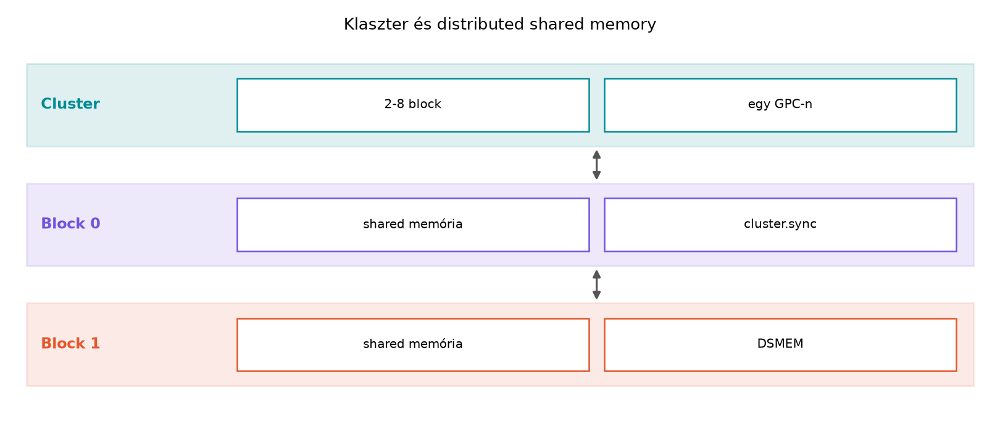

A thread block cluster a cooperative groups modell legfontosabb
újítása a Hopper-generációtól kezdve. A korábbi fejezetben megismert
thread_group, tiled_partition és blokk-szintű
csoportok a blokk határain belül maradtak. A klaszter ezt a határt lépi
át: több, egyidejűleg futó blokkot fog össze egy szoros együttműködésre
képes csoportba, és ehhez a hardver egy új memóriateret is ad: a
distributed shared memory-t (DSMEM). Ebben az alfejezetben a klaszter
fogalmát, a DSMEM címzését, a cluster.sync()
szinkronizációt és a tipikus hibákat tárgyaljuk, majd egy kisméretű,
ellenőrizhető laborral zárunk.

A hagyományos CUDA-végrehajtási modellben a blokkok függetlenek. A specifikáció garantálja, hogy a blokkok tetszőleges sorrendben, tetszőleges számú SM-en futhatnak, és közöttük nincs biztonságos, alacsony késleltetésű kommunikáció. A blokkok közötti adatcsere kizárólag a global memórián keresztül történhet, amihez legalább egy kernelhatár vagy atomi művelet és megfelelő memória-fence szükséges. Ez a modell nagyfokú skálázhatóságot ad, de számos algoritmusban – például stencil-számítások halo-cseréjénél, mátrix-szorzásnál, ahol a blokkok közösen használnak egy nagyobb csempét, vagy olyan redukcióknál, ahol a blokkok részeredményeinek gyors cseréje hasznos – a global memória körülményessé és lassúvá teszi az együttműködést.
A thread block cluster ezt a korlátot oldja fel. A klaszter egy
olyan, a hardver által együtt ütemezett blokkcsoport, amelynek tagjai
hozzáférhetnek egymás shared memóriájához. Ez a distributed shared
memory (DSMEM) a klaszterhez tartozó blokkok shared memóriaterületének
logikai uniója. A blokk továbbra is a szinkronizáció alapegysége
(__syncthreads()), de a klaszter egy új szintet ad:
cluster.sync(), amely a klaszter összes blokkját
szinkronizálja. A klaszterek tehát a blokkok közötti finomszemcsés,
alacsony késleltetésű adatcserét teszik lehetővé anélkül, hogy a
kernelnek vissza kellene térnie a hostra, vagy global memórián keresztül
kellene koordinálnia.
Fontos megkülönböztetni a klasztert a grid-szintű szinkronizációtól. A klaszter egy kisebb, hardveresen garantáltan együtt ütemezett csoport, míg a grid-szintű szinkronizáció az egész gridre vonatkozik, és csak kooperatív indítással használható, ha a grid összes blokkja egyszerre rezidens az eszközön. A klaszterek így egy közbülső, gyakran hatékonyabb együttműködési szintet adnak, különösen akkor, ha a teljes grid szinkronizálása nem lehetséges vagy nem kívánatos. A grid-szintű szinkronizáció részleteit a következő alfejezet tárgyalja.
A thread block clustert a Hopper-architektúra (compute capability
9.0) vezette be, és a Blackwell (sm_100) is támogatja. A klaszterek
használatához a kernelben meg kell adni a klaszter dimenzióit a
__cluster_dims__ attribútummal, például:
__global__ void __cluster_dims__(2, 1, 1) my_kernel(...)Ez azt jelenti, hogy minden klaszter 2×1×1, azaz összesen 2 blokkot
tartalmaz. A
<<<grid, block, sharedBytes, stream>>>
launch konfigurációban a grid továbbra is a blokkok
számát adja meg (nem a klaszterekét), és az egyes dimenzióknak
oszthatónak kell lenniük a klaszterdimenzióval; különben az indítás
klaszter-konfigurációs hibával hiúsul meg (a CUDA 13.0
driver_types.h szerint
cudaErrorInvalidClusterSize; a pontos kód a
Toolkit-verziótól függhet, és Hopperen ellenőrizendő; a hibát a
cudaGetLastError() jelzi). A klaszterek száma tehát
gridDim.x / clusterDim.x (1D esetben). Például
__cluster_dims__(2,1,1) mellett a
<<<8, 256>>> indítás 4 klasztert (8
blokkot) hoz létre, a <<<1, 256>>> pedig
érvénytelen.
A klaszterek méretét a hardver korlátozza. A
hordozható klasztermaximum 8 blokk (a dimenziók
szorzata); Hopperen (H100) nem hordozható módon 16 blokkos klaszter is
engedélyezhető a
cudaFuncSetAttribute(kernel, cudaFuncAttributeNonPortableClusterSizeAllowed, 1)
hívással. A klaszterindítás támogatását a
cudaDevAttrClusterLaunch eszközattribútum, a konkrét
kernelre és konfigurációra érvényes legnagyobb klaszterméretet a
cudaOccupancyMaxPotentialClusterSize adja:
int clusterLaunchSupported = 0;
CUDA_CHECK(cudaDeviceGetAttribute(&clusterLaunchSupported,
cudaDevAttrClusterLaunch, 0));
// A kernelre érvényes legnagyobb klaszterméret (cudaLaunchConfig_t cfg
// a tervezett grid/block/shared beállításokkal):
// int maxSize = 0;
// CUDA_CHECK(cudaOccupancyMaxPotentialClusterSize(&maxSize, kernel, &cfg));(Nincs cudaDevAttrMaxClusterDimX/Y/Z attribútum; a
korlátokat a fenti API-kkal és a CUDA verzió dokumentációjával kell
ellenőrizni.) Emellett a cudaOccupancyMaxActiveClusters
megadja, hogy adott kernel és launch-konfiguráció mellett hány klaszter
lehet egyidejűleg aktív az egész eszközön (nem
SM-enként), figyelembe véve a regiszter- és shared memory
korlátokat.
A klaszterek fizikai megvalósításához a Hopper SM-ek között dedikált, nagy sávszélességű összeköttetés áll rendelkezésre. Ez teszi lehetővé, hogy egy blokk egy másik, ugyanabban a klaszterben futó blokk shared memóriáját olvassa vagy írja anélkül, hogy a global memória hierarchiáján keresztül kellene mennie. A DSMEM-hozzáférés késleltetése alacsonyabb, mint a global memória, de magasabb, mint a saját shared memória elérése. A tényleges teljesítmény a klaszter méretétől, az SM-ek közötti topológiától és a hozzáférési mintától függ. A hardveres támogatás az egyik fő oka annak, hogy a klaszterek csak az újabb architektúrákon érhetők el.
A distributed shared memory a klaszterhez tartozó blokkok shared
memóriáinak összessége. Minden blokk továbbra is saját, privát shared
memóriával rendelkezik, amelynek méretét a kernel launch
shared_bytes paramétere határozza meg. A DSMEM ezt a privát
területet teszi elérhetővé a klaszter többi blokkja számára.
A DSMEM eléréséhez a cooperative_groups::cluster_group
osztály szolgál. A klaszter csoportot a kernelben a következőképpen
kapjuk meg:
#include <cooperative_groups.h>
namespace cg = cooperative_groups;
__global__ void __cluster_dims__(2, 1, 1) dsmem_kernel() {
cg::cluster_group cluster = cg::this_cluster();
// ...
}A cluster_group fontosabb metódusai:
cluster.block_rank(): a hívó blokk rangja a klaszteren
belül (0 és num_blocks()-1 között).cluster.dim_blocks(): a klaszter dimenziói
(dim3 típus).cluster.num_blocks(): a klaszterben lévő blokkok teljes
száma.cluster.sync(): klaszter-szintű barrier.cluster.map_shared_rank(T* addr, int rank): a saját
shared memória addr címéhez visszaadja a rank
rangú blokk megfelelő címét, ugyanolyan T* típussal.A map_shared_rank kulcsfontosságú: ez képezi le a
DSMEM-címeket. Az addr paraméter a hívó blokk shared
memóriájának egy érvényes címe, a rank pedig a célblokk
rangja a klaszteren belül. A visszatérési érték egy pointer a célblokk
shared memóriájában ugyanarra a relatív címre. Például ha a saját
blokkban az smem tömb a shared memória elején van, akkor a
másik blokk ugyanazon smem tömbjének első elemét a
cluster.map_shared_rank(smem, other_rank) címen érjük
el.
Fontos megérteni, hogy a DSMEM-hozzáférés nem igényel explicit másolást. A pointer közvetlenül a távoli blokk shared memóriájára mutat, ezért az olvasás és írás a hardveres interconnecten keresztül történik. A hozzáférés azonban nem tranzakcionális, és a memória-láthatóságot explicit szinkronizációval kell biztosítani.
A DSMEM használatakor a shared memória mérete továbbra is blokkonként
értendő. Ha minden blokk például 32 KiB shared memóriát allokál, akkor
egy 4 blokkos klaszter összesen 128 KiB DSMEM-et tesz elérhetővé a
klaszter számára. A blokkonkénti shared memória korlátját (H100-on
opt-in módon legfeljebb 227 KB blokkonként) a
cudaDevAttrMaxSharedMemoryPerBlockOptin attribútum adja; ez
minden blokk saját allokációjára vonatkozik, a távoli blokkok shared
memóriája a saját blokkjuk keretébe számít. A klaszter a blokkonkénti
erőforrásigényt nem növeli, de az ütemező csak akkor indíthat el egy
klasztert, ha annak minden blokkja egyszerre elfér ugyanazon GPC
SM-jein; ez csökkentheti az elérhető occupancyt.
A cluster.sync() a klaszter összes blokkja számára egy
közös barrier. Amikor egy szál meghívja, a hardver megvárja, amíg a
klaszter minden blokkjának összes szála eléri ugyanezt a hívást, majd
mindenki folytatja a végrehajtást. Ez hasonló a
__syncthreads()-hez, de nem csak a blokkon belüli szálakat,
hanem a klaszter összes blokkjának összes szálát szinkronizálja (a
blokkon belüli szálakat is), ezért mellé __syncthreads()
nem kell.
A cluster.sync() barrier release/acquire szemantikájú: a
barrier előtt a klaszter szálai által végzett memóriaírások (a saját és
a távoli shared memóriába egyaránt) a barrier után a klaszter minden
szála számára láthatók. Ha tehát egy blokk a saját shared memóriájába
ír, majd cluster.sync()-et hív, a klaszter többi blokkja a
barrier utáni olvasással biztonságosan látja az írt értékeket. Két blokk
ugyanazon távoli címre való egyidejű írása azonban továbbra is
versenyhelyzet; az ilyet atomi műveletekkel vagy külön szinkronizációval
kell kezelni.
A cluster.sync() minden blokkban ugyanazt a hívást
jelenti, de feltételesen is elhelyezhető, ha a feltétel a klaszter
minden szálán ugyanazt az eredményt adja. Ha a feltétel nem uniform a
klaszteren belül, a program holtpontra futhat, mert egyes szálak sosem
érik el a barriert.
Második, záró barrier. A DSMEM-hozzáférésnél egy
további szabály is érvényes: egy blokk shared memóriája a blokk
kilépésével megszűnik. Ha a távoli blokk olvasása még folyamatban van,
miközben a tulajdonos blokk már kilépett, az definiálatlan viselkedés.
Ezért a távoli olvasások/írások után egy záró
cluster.sync() kell, hogy egyik blokk se léphessen
ki, amíg a többi még hozzáfér a shared memóriájához. A
__syncthreads() csak a blokkon belüli szálak
összehangolására elég, a klaszterek közötti kapcsolatra nem.
Az alábbi CUDA C++ példa egy kétblokkos klasztert indít, amelyben
mindkét blokk inicializálja a saját shared memóriáját, majd a
klaszter-szinkronizáció után mindkét blokk kiolvassa a másik blokk egy
értékét, és ellenőrzi annak helyességét. A példa a DSMEM alapvető
működését mutatja be, és közben gyakorolja a klaszter lekérdezését, a
map_shared_rank használatát és a
cluster.sync()-et.
A kernel:
// CUDA C++ (C++17), nvcc 12.x, -arch=sm_90 (Hopper); nem futtatott példa
#include <cuda_runtime.h>
#include <cooperative_groups.h>
#include <cstdio>
#include <cstdlib>
namespace cg = cooperative_groups;
#define CUDA_CHECK(call) \
do { \
cudaError_t err = (call); \
if (err != cudaSuccess) { \
std::fprintf(stderr, "CUDA error %s:%d: %s\n", \
__FILE__, __LINE__, cudaGetErrorString(err)); \
std::exit(EXIT_FAILURE); \
} \
} while (0)
__global__ void __cluster_dims__(2, 1, 1)
dsmem_exchange_kernel(int* d_result)
{
extern __shared__ int smem[];
cg::cluster_group cluster = cg::this_cluster();
const int block_rank = cluster.block_rank();
const int tid = threadIdx.x;
// 1. Inicializálás: minden blokk feltölti a saját shared memóriáját.
// Az érték a blokk rangjától és a szál indexétől függ,
// így a távoli blokk értéke egyértelműen azonosítható.
smem[tid] = block_rank * 1000 + tid;
// 2. Klaszter-szinkronizáció: a klaszter minden blokkjának minden szála
// elvégezte az inicializálást, és az írások mindenki számára láthatók
// (a blokkon belüli szinkronizációt is magában foglalja).
cluster.sync();
// 3. A másik blokk rangjának meghatározása.
// Kétblokkos klaszterben ez egyszerű: 1 - block_rank.
const int remote_rank = 1 - block_rank;
// 4. A távoli blokk shared memóriájának elérése.
int* remote_smem = cluster.map_shared_rank(smem, remote_rank);
// 5. Ellenőrzés: a 0. szál elvégzi a tényleges összehasonlítást.
if (tid == 0) {
// A várt érték a távoli blokk 0. szálának inicializált értéke.
const int expected = remote_rank * 1000 + 0;
const int actual = remote_smem[0];
// Ha az érték megegyezik, a sikert 0-val, ellenkező esetben 1-gyel jelöljük.
// Az eredményt a global memóriába írjuk, ahol a host ellenőrizheti.
// A klaszter indexe: blokkindex / klaszterenkénti blokkszám.
const int cluster_idx = blockIdx.x / cluster.num_blocks();
d_result[cluster_idx * 2 + block_rank] = (actual == expected) ? 0 : 1;
}
// 6. Záró klaszter-barrier: a távoli olvasás befejezéséig egyik blokk
// sem léphet ki (a shared memóriája megszűnne).
cluster.sync();
}Az alábbi ábra a kernel címleképezését és a két
cluster.sync() szerepét mutatja.
map_shared_rank a másik blokk shared memóriájának ugyanarra
az eltolására mutat; az első cluster.sync() a láthatóságot,
a második a korai kilépés tilalmát biztosítjaA kernel launch paraméterei:
2 blokk (numClusters * 2, azaz 1
klaszter a __cluster_dims__(2,1,1) mellett),256 szál,256 * sizeof(int) bájt,A hostoldali vezérlő:
int main()
{
constexpr int numClusters = 1;
constexpr int blocksPerCluster = 2; // a __cluster_dims__(2,1,1) szerint
constexpr int threadsPerBlock = 256;
constexpr int sharedBytes = threadsPerBlock * sizeof(int); // 1024 bájt
// Eszköztámogatás ellenőrzése (Hopper vagy újabb)
int clusterSupported = 0;
CUDA_CHECK(cudaDeviceGetAttribute(&clusterSupported,
cudaDevAttrClusterLaunch, 0));
if (!clusterSupported) {
std::fprintf(stderr, "A klaszterek nem támogatottak ezen az eszközön.\n");
return EXIT_FAILURE;
}
// Kimeneti tömb allokálása: klaszterenként 2 eredmény
int* d_result = nullptr;
CUDA_CHECK(cudaMalloc(&d_result, numClusters * 2 * sizeof(int)));
CUDA_CHECK(cudaMemset(d_result, 0xFF, numClusters * 2 * sizeof(int))); // -1: még nem írt
// Kernel indítás
dsmem_exchange_kernel<<<numClusters * blocksPerCluster, threadsPerBlock,
sharedBytes>>>(d_result);
CUDA_CHECK(cudaGetLastError());
CUDA_CHECK(cudaDeviceSynchronize());
// Eredmény átmásolása és ellenőrzése
int h_result[2];
CUDA_CHECK(cudaMemcpy(h_result, d_result, sizeof(h_result),
cudaMemcpyDeviceToHost));
bool pass = (h_result[0] == 0) && (h_result[1] == 0);
std::printf("DSMEM exchange: %s (block0=%d, block1=%d)\n",
pass ? "OK" : "FAIL", h_result[0], h_result[1]);
CUDA_CHECK(cudaFree(d_result));
return pass ? EXIT_SUCCESS : EXIT_FAILURE;
}Fordítási parancs:
nvcc -std=c++17 -arch=sm_90 -O3 -o dsmem_exchange dsmem_exchange.cuFuttatás:
./dsmem_exchangeVárt (nem futtatott) kimenet sikeres futás esetén; a kód 0-t ír a sikeres blokkra:
DSMEM exchange: OK (block0=0, block1=0)Magyarázat a kódhoz:
__cluster_dims__(2,1,1) attribútum biztosítja, hogy
minden klaszter két blokkot tartalmazzon. A launch grid
értéke a blokkok száma (itt 2), és osztható kell legyen a
klaszterdimenzióval; 2 blokk = 1 klaszter.cluster.block_rank() adja vissza. Ez
a rang a klaszteren belüli pozíciót jelöli, és a klaszter minden
blokkjában egyedi.extern __shared__ int smem[] a blokk saját shared
memóriáját deklarálja, méretét a launch sharedBytes
paramétere adja meg.map_shared_rank(smem, remote_rank) a saját
smem tömb kezdőcíméből kiszámítja a
remote_rank rangú blokk megfelelő shared memóriacímét. A
visszakapott pointerrel közvetlenül olvashatjuk a távoli blokk
adatait.cluster.sync() a klaszter összes blokkját
szinkronizálja. Az első hívás azért kell, mert a távoli olvasás előtt
mindkét blokknek be kell fejeznie a saját shared memóriájának
feltöltését; a záró hívás pedig azért, hogy egyik blokk se lépjen ki,
amíg a másik még olvassa a shared memóriáját.d_result tömb indexelése a klaszter indexét
(blockIdx.x / cluster.num_blocks()) és a blokk rangját
használja. Itt egyetlen klasztert indítunk, ezért a klaszterindex 0, és
a két blokk rangja (blockIdx.x is) 0 és 1; a
d_result két elemű.A példa szándékosan egyszerű, hogy a klaszter és a DSMEM alapjait hangsúlyozza. Valós algoritmusokban a DSMEM-et jellemzően nagyobb csempék megosztására, halo-cserére vagy blokkok közötti redukcióra használják, ahol a blokkok közötti finomszemcsés adatcsere sávszélesség- vagy késleltetéskritikus.
A klaszterek és a DSMEM használata során több gyakori hiba fordul elő. Az alábbi lista a leggyakoribbakat foglalja össze.
1. Nem támogatott hardveren való futtatás.
A klaszterek csak compute capability 9.0 (Hopper) vagy újabb eszközökön
érhetők el. Ha a kódot régebbi GPU-n futtatjuk, a kernel indítása hibát
ad, vagy a program rosszul viselkedik. Mindig ellenőrizzük a
cudaDevAttrClusterLaunch attribútumot, és adjunk értelmes
hibaüzenetet, ha az eszköz nem támogatja a klasztereket.
2. A klaszter dimenzióinak helytelen megadása.
A __cluster_dims__ attribútumban megadott dimenziók
szorzatának nem szabad meghaladnia a hardveres korlátot (Hopper esetén
8-at). Emellett a dimenziók nem lehetnek 0 vagy negatívak. Ha a
dimenziószorzat túl nagy, a kernel indítása meghiúsul. A maximális
méretet a cudaOccupancyMaxPotentialClusterSize API-val
kérdezhetjük le, és a kernelben is ellenőrizhetjük a
cluster.num_blocks() értékét. A hordozható határ 8 blokk;
ennél nagyobb (Hopperen legfeljebb 16) csak a
cudaFuncAttributeNonPortableClusterSizeAllowed
engedélyezésével használható.
3. A grid dimenzió félreértelmezése.
A __cluster_dims__ mellett is a
<<<grid, block, shared, stream>>> launch
grid paramétere a blokkok számát adja; a
klaszterek száma grid / clusterDim. A gridnek oszthatónak
kell lennie a klaszterdimenzióval, különben az indítás
klaszter-konfigurációs hibával
(cudaErrorInvalidClusterSize; a pontos kód a
Toolkit-verziótól függhet, Hopperen ellenőrizendő) meghiúsul (pl.
<<<1, 256>>> egy
__cluster_dims__(2,1,1) kernelnél). A megoldás: a gridet
numClusters * clusterDim.x értékre állítsuk, a klaszter
indexét blockIdx.x / cluster.num_blocks(), a blokk helyét a
klaszterben a cluster.block_rank() adja.
4. Hiányzó vagy rosszul elhelyezett
cluster.sync().
A DSMEM-hozzáférések előtt a klasztert szinkronizálni kell, különben a
távoli blokk írásai még nem láthatóak. A cluster.sync()-et
minden olyan ponton meg kell hívni, ahol a blokkok közötti adatfüggőség
van, és a távoli hozzáférések után is kell egy záró
cluster.sync(), hogy a tulajdonos blokk ne lépjen ki idő
előtt (különben a távoli olvasás érvénytelen memóriát érhet). Gyakori
hiba, hogy a fejlesztő csak __syncthreads()-et használ; az
csak a blokkon belül szinkronizál. A cluster.sync() a
klaszter összes szálát szinkronizálja, így mellé a blokkon belüli
__syncthreads() felesleges: a sorrend blokkszintű írás,
cluster.sync(), majd a távoli olvasás, végül a záró
cluster.sync().
5. A map_shared_rank helytelen
használata.
A map_shared_rank csak a hívó blokk saját shared
memóriájában érvényes címet fogad el. Ha global vagy local memóriacímet
adunk át, a viselkedés definiálatlan. Emellett a rank
paraméternek a klaszteren belüli érvényes rangot kell megadnia; a 0 és
cluster.num_blocks()-1 közötti tartományból. Ha a rang
érvénytelen, a hardver hibát jelezhet, vagy a program rossz
memóriaterületre mutat. A rangokat mindig a
cluster.block_rank() és a cluster.dim_blocks()
alapján számítsuk.
6. DSMEM-versenyhelyzetek.
A DSMEM nem tranzakcionális, és a blokkok közötti egyidejű olvasás/írás
versenyhelyzethez vezethet. Ha két blokk ugyanazt a távoli shared
memóriacímet írja, az eredmény definiálatlan. Az ilyen mintákat atomi
műveletekkel vagy gondos szinkronizációval kell elkerülni. A
gyakorlatban a DSMEM-et tipikusan úgy használjuk, hogy minden blokk a
saját shared memóriájába ír, és a többi blokk csak olvas, vagy explicit
feladatmegosztással biztosítjuk, hogy ne legyen ütközés.
7. Occupancy-csökkenés és
erőforrás-túlfoglalás.
A klaszterek nem növelik a blokkonkénti erőforrásigényt, de a klaszter
összes blokkjának egyszerre, ugyanazon GPC SM-jein kell rezidensnek
lennie (ütemezési kényszer, töredezettség), és a DSMEM-interconnect
sávszélességét is figyelembe kell venni. Ha a klaszter túl nagy,
előfordulhat, hogy egyetlen klaszter sem fér el az SM-eken, vagy az
occupancy drasztikusan lecsökken. Az
cudaOccupancyMaxActiveClusters API-val ellenőrizhetjük,
hogy adott konfiguráció mellett hány klaszter lehet aktív.
Optimalizáláskor érdemes a klaszterméretet a valós adatfüggőségekhez
igazítani, nem pedig a maximálisat használni.
8. A kernel-attribútum és a launch konfiguráció
eltérése.
A __cluster_dims__ attribútumot a kernel definíciójában
kell megadni, és a launch során nem lehet felülírni. Ha a kernelben
__cluster_dims__(2,1,1) szerepel, akkor a hívásnak nem
lehet más klaszterdimenziója. A cudaLaunchKernelEx API-val
dinamikusan is megadhatók a klaszterdimenziók, de ebben az esetben a
kernelnek nem szabad __cluster_dims__ attribútummal
rendelkeznie. A két módszer keverése hibát okoz.
Ez a labor a fenti példát bővíti ki több klaszter indításával. A labor célja, hogy az olvasó saját környezetében reprodukálja a klaszterek működését, ellenőrizze a helyességet és mérési naplót készítsen. A mérés a teljes kernelindítás idejét adja (egyetlen távoli olvasással blokkonként), ezért nem a DSMEM sávszélességét méri; DSMEM-teljesítmény méréséhez nagy blokkméret, sok olvasás és bájt/idő képlet kellene.
Cél:
Egy CUDA C++ program, amely numClusters klasztert indít
(egyenként 2 blokk), a blokkok a DSMEM-en keresztül cserélnek adatot, a
host ellenőrzi az eredményt, és cudaEvent-ekkel méri a
kernelidőt.
Kód:
// dsmem_lab.cu (CUDA C++, nvcc 12.x, -arch=sm_90; nem futtatott példa)
#include <algorithm>
#include <cuda_runtime.h>
#include <cooperative_groups.h>
#include <cmath>
#include <cstdio>
#include <cstdlib>
namespace cg = cooperative_groups;
#define CUDA_CHECK(call) \
do { \
cudaError_t err = (call); \
if (err != cudaSuccess) { \
std::fprintf(stderr, "CUDA error %s:%d: %s\n", \
__FILE__, __LINE__, cudaGetErrorString(err)); \
std::exit(EXIT_FAILURE); \
} \
} while (0)
__global__ void __cluster_dims__(2, 1, 1)
dsmem_exchange_kernel(int* d_result)
{
extern __shared__ int smem[];
cg::cluster_group cluster = cg::this_cluster();
const int block_rank = cluster.block_rank();
const int tid = threadIdx.x;
smem[tid] = block_rank * 1000 + tid;
cluster.sync(); // írások láthatók a klaszterben
const int remote_rank = 1 - block_rank;
int* remote_smem = cluster.map_shared_rank(smem, remote_rank);
if (tid == 0) {
const int expected = remote_rank * 1000;
const int actual = remote_smem[0];
const int cluster_idx = blockIdx.x / cluster.num_blocks();
d_result[cluster_idx * 2 + block_rank] = (actual == expected) ? 0 : 1;
}
cluster.sync(); // a távoli olvasás után lehet csak kilépni
}
int main(int argc, char** argv)
{
const int numClusters = (argc > 1) ? std::atoi(argv[1]) : 1;
const int threadsPerBlock = 256;
const int sharedBytes = threadsPerBlock * sizeof(int);
const int numBlocks = numClusters * 2; // grid = blokkok száma
const int reps = 20;
int supported = 0;
CUDA_CHECK(cudaDeviceGetAttribute(&supported, cudaDevAttrClusterLaunch, 0));
if (!supported) { std::fprintf(stderr, "Nincs klaszter-támogatás.\n"); return EXIT_FAILURE; }
int* d_result = nullptr;
CUDA_CHECK(cudaMalloc(&d_result, numClusters * 2 * sizeof(int)));
CUDA_CHECK(cudaMemset(d_result, 0xFF, numClusters * 2 * sizeof(int)));
for (int i = 0; i < 5; ++i) // warm-up (5)
dsmem_exchange_kernel<<<numBlocks, threadsPerBlock, sharedBytes>>>(d_result);
CUDA_CHECK(cudaGetLastError());
CUDA_CHECK(cudaDeviceSynchronize());
cudaEvent_t t0, t1;
CUDA_CHECK(cudaEventCreate(&t0));
CUDA_CHECK(cudaEventCreate(&t1));
float ms[reps], mean = 0.f;
for (int r = 0; r < reps; ++r) {
CUDA_CHECK(cudaEventRecord(t0));
dsmem_exchange_kernel<<<numBlocks, threadsPerBlock, sharedBytes>>>(d_result);
CUDA_CHECK(cudaEventRecord(t1));
CUDA_CHECK(cudaEventSynchronize(t1));
CUDA_CHECK(cudaGetLastError());
CUDA_CHECK(cudaEventElapsedTime(&ms[r], t0, t1));
mean += ms[r] / reps;
}
float var = 0.f;
for (int r = 0; r < reps; ++r) var += (ms[r] - mean) * (ms[r] - mean);
float sd = std::sqrt(var / (reps - 1));
std::sort(ms, ms + reps);
float med = 0.5f * (ms[reps / 2 - 1] + ms[reps / 2]); // reps páros
int* h = (int*)std::malloc(numClusters * 2 * sizeof(int));
CUDA_CHECK(cudaMemcpy(h, d_result, numClusters * 2 * sizeof(int), cudaMemcpyDeviceToHost));
bool pass = true;
for (int i = 0; i < numClusters * 2; ++i) pass = pass && (h[i] == 0);
std::printf("klaszterek=%d blokkok=%d: %s, median %.1f us, szoras %.1f us\n",
numClusters, numBlocks, pass ? "OK" : "FAIL", med * 1e3f, sd * 1e3f);
std::free(h);
CUDA_CHECK(cudaEventDestroy(t0));
CUDA_CHECK(cudaEventDestroy(t1));
CUDA_CHECK(cudaFree(d_result));
return pass ? EXIT_SUCCESS : EXIT_FAILURE;
}Buildparancs:
nvcc -std=c++17 -arch=sm_90 -O3 -o dsmem_lab dsmem_lab.cuFuttatási parancs:
timeout 60 ./dsmem_lab 4Ahol a 4 a klaszterek száma (8 blokk).
GPU-konfiguráció (kitöltendő a futtatáskor):
- GPU: <modell> (compute capability 9.0 vagy
újabb)
- Driver / CUDA: <kitöltendő>
- Órajel, power limit, ECC, MIG, virtualizáció, háttérterhelés:
<kitöltendő>
Mérési napló (a kód nem futtatott; a mért oszlopot az olvasó tölti ki):
| Klaszterek száma | Blokkok száma | Várt „Helyes?” | Medián futásidő (µs) | Szórás (µs) |
|---|---|---|---|---|
| 1 | 2 | igen | <mért – kitöltendő> |
<mért – kitöltendő> |
| 4 | 8 | igen | <mért – kitöltendő> |
<mért – kitöltendő> |
| 8 | 16 | igen | <mért – kitöltendő> |
<mért – kitöltendő> |
A mérés 5 warm-up és 20 mért ismétlés; a szórás a 20 ismétlésből
számított mintaszórás. Az cudaOccupancyMaxActiveClusters
eszközszintű érték (aktív klaszterek az egész eszközön), nem a
launch-olt klaszterek számának függvénye, ezért a táblázatban nem
szerepel; külön lekérdezve egyszer jelentendő.
Várt eredmény:
A program minden klaszterben mindkét blokkra 0-t ír a kimeneti tömbbe,
ami azt jelzi, hogy a DSMEM-csere sikeres volt. Ha bármelyik érték 1,
akkor a távoli olvasás hibás, és a hibát a fenti tipikus hibák alapján
kell diagnosztizálni. A futásidő nagyságrendjére nem adunk számolt
becslést; a kernelindítás költsége dominálhat, a pontos értékek a
GPU-tól és a rendszerkonfigurációtól függenek.
Fontos biztonsági megjegyzés:
A klaszterkernelt izolált környezetben futtassuk, mert a hibás
klaszterdimenzió vagy szinkronizáció eszközleállást okozhat. A
nvidia-smi segítségével figyeljük az eszköz állapotát, és
állítsunk be timeoutot a futtatáshoz. Megosztott GPU-n (MIG,
time-slicing) a klaszterindítás elérhetőségét a
cudaDevAttrClusterLaunch attribútummal ellenőrizzük, és
gondoskodjunk a szomszédos terhelés izolálásáról.
A thread block cluster a Hopper-generáció által bevezetett hardveres
együttműködési szint, amely lehetővé teszi, hogy több blokk szorosan
együttműködjön egy klaszteren belül. A distributed shared memory a
klaszter blokkjainak shared memóriáit egyesíti, és a
map_shared_rank segítségével a blokkok közvetlenül elérik
egymás shared memóriáját. A cluster.sync() klaszterszintű
barriert biztosít (a klaszter összes szálára), amely a DSMEM-műveletek
láthatóságát is garantálja. A klaszterek használata új lehetőségeket
nyit a blokkok közötti finomszemcsés kommunikációra, de gondos
konfigurációt és hibakezelést igényel.
Önellenőrző kérdés:
Mi a különbség a __syncthreads() és a
cluster.sync() között, és miért van szükség a záró
cluster.sync()-re, ha egy klaszter blokkja DSMEM-en
keresztül olvassa egy másik blokk adatait? Indokold egy rövid
példával.